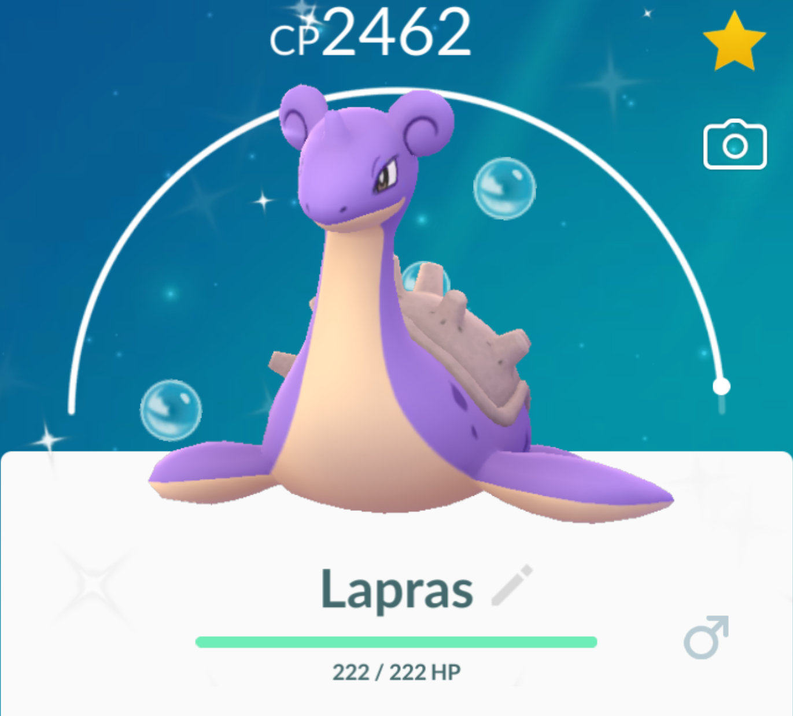

Shiny Lapras
Shiny Pokémon are extremely rare Pokémon that differ in coloration from their regular appearance. These color variations may range from minor hue adjustments to completely altered palettes. Only one shiny variation exists for each Pokémon.
In the map view, shiny Pokémon are shows in their regular coloration until they appear on the encounter screen or on the summary page, where they have an aura of stars around them, a shiny tab shown above the CP and their different coloration is visible
Once a player captures a shiny Pokémon, their Pokédex will show that they have captured it and additional switch buttons for shiny forms will unlock in each individual Pokédex entry.
Shiny Rates
In mainline Pokémon games, there is a fixed shiny rate which apply to all Pokémon. However, the creators of Pokémon Go, Niantic, have not released any official information on the statistics regarding Shiny Pokémon. Many people want to know the chances of catching a shiny Pokémon as shiny hunting is a popular activity in Pokémon games. Using information from research performed by The Silph Road, we arrive at the following table of shiny rate values:
| Wild Pokémon |
Legendaries |
Raid-Exclusives |
Community Day |
Baby Pokémon |
Field Research |
| 1 in 450 |
1 in 19 |
1 in 50 |
1 in 24.5 |
1 in 50 |
1 in 60 |
Shiny Pokédex
Below is a table of shiny Pokémon currently available in Pokémon Go. There are six main keys determining how a given shiny can be found. These keys are shown in the "Found in" column.